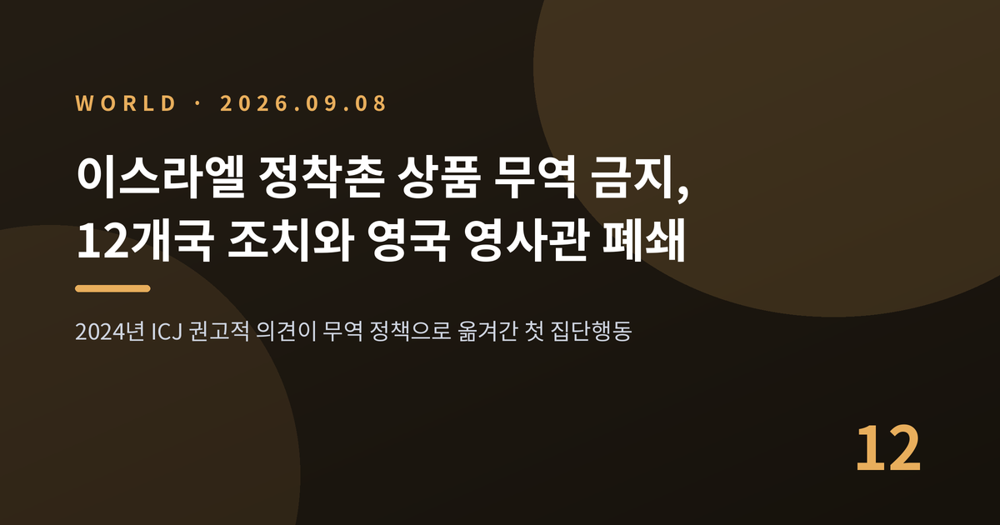
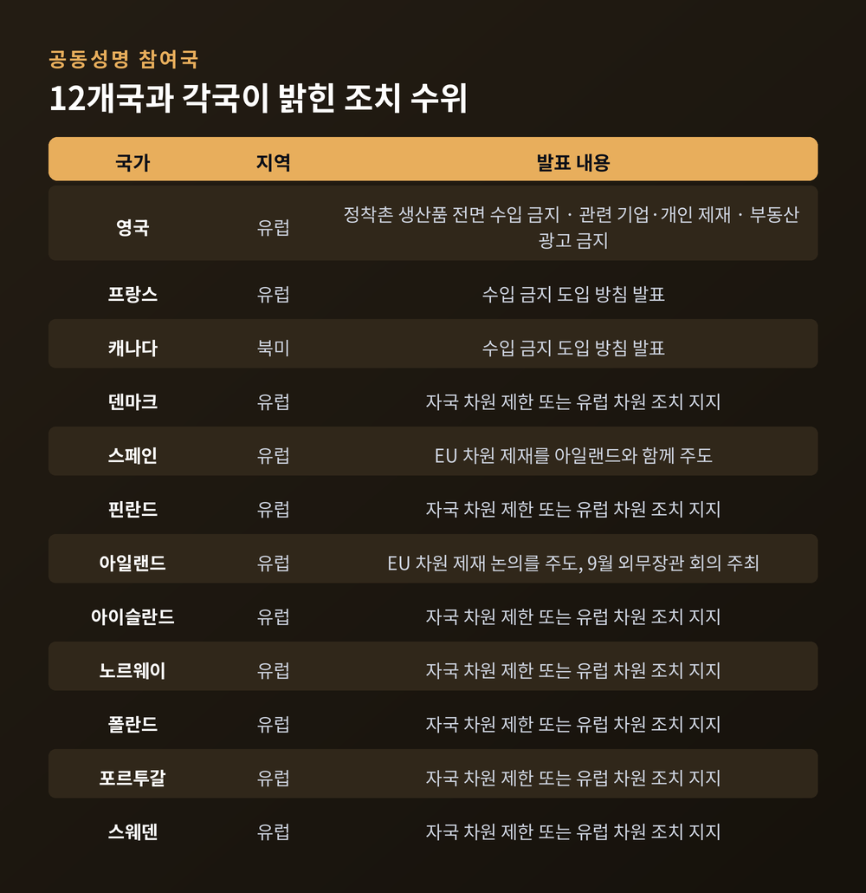
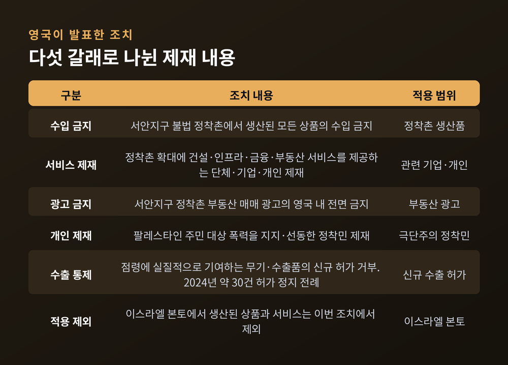
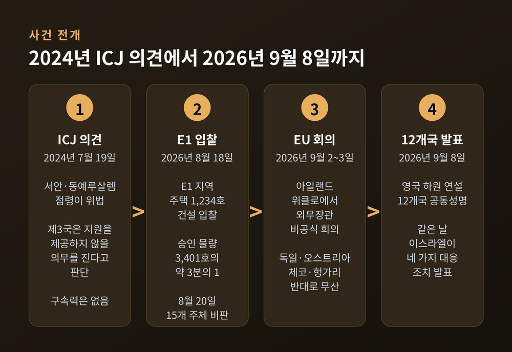
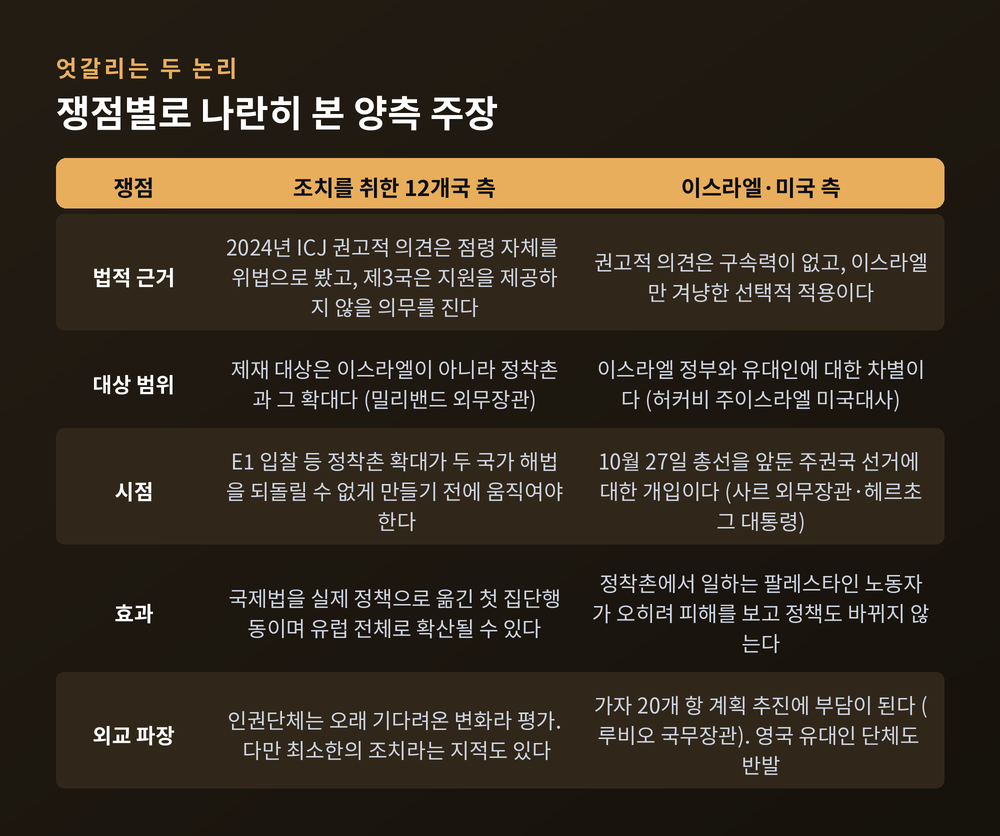
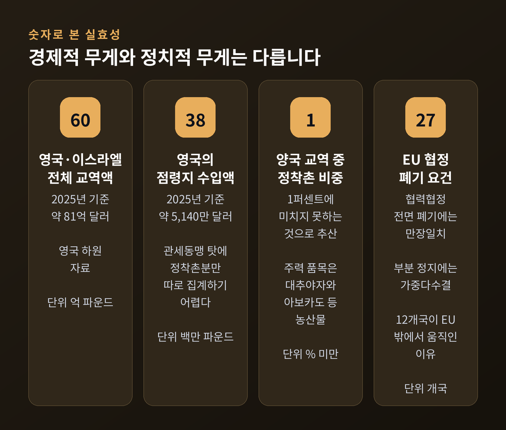

이스라엘 정착촌 상품 무역 금지, 12개국 조치와 영국 영사관 폐쇄
이번 글에서는 2026년 9월 8일 영국·프랑스·캐나다 등 12개국이 발표한 이스라엘 서안지구 정착촌 상품 무역 금지 조치를 정리해 보겠습니다. 조치가 나온 배경과 이스라엘·미국의 반박, 그리고 실제 파급력까지 함께 살펴보겠습니다. 민감한 사안인 만큼 양쪽 논리를 나란히 놓겠습니다.
세 줄 요약
- 9월 8일 영국 외무장관이 하원에서 서안지구 정착촌 생산품 수입 금지를 발표했고, 같은 날 12개국이 공동성명으로 교역 제한 의사를 확인했습니다.
- 근거는 2024년 국제사법재판소(ICJ)의 권고적 의견입니다. 이스라엘은 예루살렘 주재 영국 총영사관 폐쇄를 포함한 네 가지 대응으로 맞섰습니다.
- 정착촌 상품이 영국–이스라엘 교역에서 차지하는 비중은 1% 미만입니다. 경제적 타격보다 정치적 상징성이 큰 조치입니다.

9월 8일, 하원 연설에서 시작됐습니다
현지시간 9월 8일 에드 밀리밴드 영국 외무장관이 하원에 섰습니다. 그는 이스라엘이 점령한 요르단강 서안지구 정착촌에서 생산된 모든 상품의 수입을 금지하겠다고 밝혔습니다. 본인은 이를 영국 대이스라엘 정책의 "포괄적 재설정"이라고 표현했습니다.
연설 직후 12개국이 공동성명을 냈습니다. 영국, 프랑스, 캐나다, 덴마크, 스페인, 핀란드, 아일랜드, 아이슬란드, 노르웨이, 폴란드, 포르투갈, 스웨덴입니다. 이들은 두 국가 해법 지지를 재확인하고 이스라엘 정부에 정착촌 확대의 즉각 중단을 촉구했습니다.
다만 12개국이 모두 같은 수위로 움직이는 것은 아닙니다. 영국·프랑스·캐나다가 직접 수입 금지를 도입하고, 나머지 국가들은 자국 차원의 제한 도입 또는 유럽 차원 조치에 대한 지지를 표명한 것으로 전해졌습니다. 무역 금지 자체도 즉시 발효가 아니라 수개월의 준비 기간을 거칠 것으로 알려졌습니다.

영국이 내놓은 조치는 다섯 갈래입니다
첫째, 서안지구 불법 정착촌에서 생산된 모든 상품의 수입을 금지합니다.
둘째, 정착촌 확대에 건설·인프라·금융·부동산 서비스를 제공하는 기업과 개인을 제재합니다.
셋째, 서안지구 정착촌 부동산 매매 광고를 영국 내에서 전면 금지합니다.
넷째, 팔레스타인 주민에 대한 폭력을 지지하거나 선동한 정착민을 제재 대상에 올립니다.
다섯째, 점령에 실질적으로 기여하는 무기와 수출품에 대해 신규 수출 허가를 내주지 않습니다. 영국은 2024년에도 이스라엘군이 가자에서 쓰는 무기 수출 허가 약 30건을 정지한 적이 있습니다. 당시 F-35 전투기 부품은 예외였습니다.
이스라엘 본토에서 생산된 상품과 서비스는 이번 조치에서 제외됩니다. 영국 정부가 반복해 강조한 지점입니다.

법적 근거는 2024년 ICJ 권고적 의견입니다
이번 조치의 논거는 국제사법재판소에서 나왔습니다. 2024년 7월 19일 ICJ는 이스라엘의 서안지구·동예루살렘 점령이 국제법상 위법하며 정착촌 체제와 병합, 천연자원 이용도 위법이라는 권고적 의견을 냈습니다.
여기서 12개국이 주목한 대목은 제3국의 의무 부분입니다. ICJ는 모든 국가가 이스라엘의 위법한 주둔에서 비롯된 상황을 합법으로 승인하지 않을 의무, 그 주둔 유지에 원조나 지원을 제공하지 않을 의무를 진다고 판단했습니다. 정착촌 생산품을 수입하는 행위가 그 "지원"에 해당하느냐 — 조치를 취한 국가들은 그렇다고 본 것입니다.
영국 정부의 입장 변화도 여기서 갈립니다. 예전에는 정착촌만 불법으로 규정했습니다. 지금은 서안지구 점령 자체가 불법이라는 판단을 공식 채택했습니다.
한 가지는 분명히 해둘 필요가 있습니다. 권고적 의견에는 법적 구속력이 없습니다. 국제법 해석에 관한 최고 사법기관의 권위 있는 판단이지만, 각국이 이를 어떤 정책으로 옮길지는 정치적 선택의 영역입니다.
방아쇠는 E1 정착촌 입찰이었습니다
시점을 이해하려면 8월로 돌아가야 합니다. 8월 18일 이스라엘 정부가 E1 지역에 주택 1,234호를 짓는 건설 입찰을 공고했습니다. 승인된 3,401호의 약 3분의 1입니다.
E1은 동예루살렘과 정착촌 마알레아두밈 사이에 있습니다. 이곳이 개발되면 서안지구의 남북이 끊깁니다. 팔레스타인 영토의 연속성이 깨진다는 뜻입니다. 휴먼라이츠워치는 18개 이상의 베두인 공동체가 강제 이주 대상이 된다고 지적했습니다.
8월 20일 영국·프랑스·독일·이탈리아·유럽집행위원회를 포함한 15개 주체가 이 입찰을 "용납할 수 없다"고 공동 비판했습니다. 독일과 이탈리아처럼 제재에는 반대하는 나라들도 이 비판에는 이름을 올렸습니다. 밀리밴드 장관은 9월 8일 연설에서 제재 제도를 확대해 E1 개발 저지를 명시적 목표로 삼겠다고 밝혔습니다.

이스라엘과 미국은 무엇을 문제 삼습니까
이스라엘의 대응은 몇 시간 만에 나왔습니다. 기드온 사르 외무장관이 네 가지 조치를 발표했습니다. 예루살렘 주재 영국 총영사관 폐쇄, 키르얏가트 국제 가자 지원센터에서 영국 대표 배제, 서안지구에서 진행되던 영국의 팔레스타인 자치정부 보안군 훈련 종료, 그리고 제러미 코빈·다이앤 애벗을 포함한 영국 의원 12명의 입국 금지입니다.
이스라엘 측 논리는 크게 셋으로 정리됩니다.
첫째는 선거 개입 주장입니다. 이스라엘은 10월 27일 총선을 앞두고 있습니다. 사르 장관은 영국의 조치를 "도덕적으로 왜곡된 것"이라 비난하며 정책 변화를 끌어낼 가능성은 없다고 단언했습니다. 이츠하크 헤르초그 대통령도 주권국의 민주적 선거에 대한 노골적 개입이라고 규정했습니다.
둘째는 역효과 주장입니다. 헤르초그 대통령은 정착촌 경제에서 일하는 팔레스타인 노동자가 오히려 피해를 본다고 했습니다. 서방 국가들의 안보 이익도 훼손된다고 덧붙였습니다.
셋째는 차별 주장입니다. 마이크 허커비 주이스라엘 미국대사는 이번 조치를 "이스라엘 정부에 대한 차별이자 유대인에 대한 차별"이라고 비판했습니다. 그는 미국 개별 주 차원의 보복 가능성을 거론하며 플로리다주를 구체적으로 지목했고, 영국 기업이 큰 피해를 볼 수 있다고 경고했습니다. 마코 루비오 국무장관은 가자 관련 20개 항 계획 추진에 부담이 된다고 지적하며, 미국은 영국과 같은 조치를 하지 않을 것이라고 못 박았습니다.
영국 내부에서도 반발이 나왔습니다. 유대인지도자협의회는 이 결정이 영국 유대인에 대한 표적을 키웠다며 무책임하다고 비판했습니다. 에프라임 미르비스 최고 랍비는 "영국 유대인에게 어두운 날"이라고 표현했습니다.
밀리밴드 장관은 이 지점을 의식한 발언을 함께 내놓았습니다. 그는 상대가 이스라엘 국민이 아니라 이스라엘 정부의 행태라고 선을 그었습니다. BDS 운동에는 반대한다고 명시했고, 하마스의 무장 해제와 가자 통치 배제도 요구했습니다. 이스라엘 정부의 행위를 이유로 영국 유대인에게 책임을 묻는 것은 명백한 반유대주의라고도 말했습니다. 밀리밴드 장관 본인이 유대인입니다.

실제 교역 규모는 크지 않습니다
숫자를 보면 이 조치의 성격이 더 분명해집니다. 영국 하원 자료에 따르면 2025년 영국–이스라엘 전체 교역액은 약 60억 파운드, 우리 돈으로 대략 81억 달러 규모입니다. 반면 같은 해 영국이 점령지에서 수입한 규모는 약 3,800만 파운드, 5,140만 달러 수준입니다. 정착촌 상품이 양국 교역에서 차지하는 비중은 1% 미만으로 추산됩니다.
정확한 집계는 애초에 어렵습니다. 점령지가 이스라엘과 관세동맹을 이루고 있기 때문입니다. 정착촌 경제의 주력 수출품은 대추야자와 아보카도, 허브 같은 농산물입니다.
영국은 이미 오래전부터 정착촌 상품에 자유무역협정상의 특혜관세를 적용하지 않았습니다. 그러니 이번 조치의 새로움은 관세가 아니라 금지라는 형식에 있습니다. 다만 "이스라엘산"으로 잘못 표기된 정착촌 상품을 어떻게 걸러낼 것인지가 이행의 관건으로 지적됩니다.

팔레스타인 측과 인권단체는 어떻게 봅니까
후삼 조믈롯 주영 팔레스타인 대사는 "오래 지연된" 조치라면서도 영국–팔레스타인 관계의 전환점이라고 평가했습니다. 규탄에서 결과로 옮겨가기 시작했다는 취지였습니다.
휴먼라이츠워치는 오래 기다려온 긍정적 변화라고 했고, 국제앰네스티 영국지부는 필요했던 큰 변화가 될 수 있다고 봤습니다.
반면 영국팔레스타인위원회의 제나 아그하 대표대행은 이를 "최소한의 조치"라고 평가했습니다. 국제법 체계를 따르는 정부라면 당연히 해야 할 일이므로 축하할 사안은 아니라는 것입니다. 조치를 환영하는 쪽에서도 온도 차가 있는 셈입니다.
앞으로 무엇을 지켜봐야 합니까
세 가지를 보시면 됩니다.
첫째는 유럽연합의 향방입니다. EU는 이미 갈라져 있습니다. 9월 2~3일 아일랜드 위클로에서 열린 외무장관 비공식 회의에서도 합의는 없었습니다. 아일랜드와 스페인이 밀고 벨기에·네덜란드가 지지했지만 독일, 오스트리아, 체코, 헝가리가 반대했습니다. 협력협정 전면 폐기에는 27개국 만장일치가 필요합니다. 12개국이 EU 틀 밖에서 움직인 이유가 여기 있습니다.
둘째는 이스라엘 총선입니다. 10월 27일 결과에 따라 정착촌 정책의 방향이 갈립니다. 영국 노동당 내부에서도 이번 조치가 오히려 네타냐후 총리 쪽 결집을 도울 수 있다는 우려가 나왔습니다.
셋째는 미국의 실제 행동입니다. 허커비 대사의 경고가 개별 주의 실제 조치로 이어질지, 아니면 수사에 그칠지는 아직 알 수 없습니다. 트럼프 대통령은 이번 금지 조치에 대해 아직 논평하지 않았습니다.
양국 관계에 정통한 한 관계자는 파이낸셜타임스에 두 나라가 바닥에 근접했거나 이미 닿았을 수 있다고 말했습니다. 회복은 긴 여정이 될 것이라는 진단이었습니다.
정리하면 이렇습니다.
이번 조치의 경제적 무게는 가볍습니다. 정치적 무게는 무겁습니다. 국제사법재판소의 권고적 의견을 실제 무역 정책으로 옮긴 첫 집단행동이라는 점에서 그렇습니다.
동시에 이 조치가 서안지구의 현실을 바꿀지는 아직 아무도 답하지 못합니다. 조치를 취한 쪽은 국제법의 이행이라고 말하고, 이스라엘과 미국은 선택적 차별이자 선거 개입이라고 말합니다. 두 주장은 각자의 논리 안에서 일관됩니다.
— 규탄과 제재 사이의 거리는 생각보다 멀고, 제재와 변화 사이의 거리는 그보다 더 멉니다.
이번 조치가 그 거리를 좁힐 첫걸음이 될지 물으신다면, 지금으로서는 10월 말 이스라엘 총선과 유럽연합의 다음 결정을 지켜본 뒤에야 답할 수 있겠다고 말씀드리겠습니다.